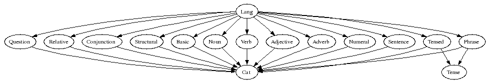
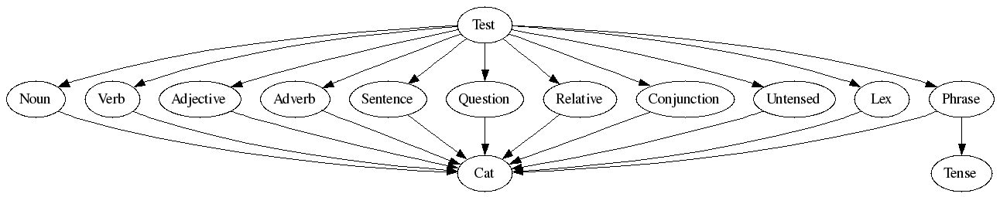

HOW TO WRITE A RESOURCE GRAMMAR
Aarne Ranta
30 November 2005
The purpose of this document is to tell how to implement the GF
resource grammar API for a new language. We will not cover how
to use the resource grammar, nor how to change the API. But we
will give some hints how to extend the API.
Notice. This document concerns the API V. 1.0 which has not
yet been released. You can find the beginnings of it
in GF/lib/resource-1.0/gf, but the locations of
files are not yet final.
The resource grammar API
The API is divided into a bunch of abstract modules.
The following figure gives the dependencies of these modules.

It is advisable to start with a simpler subset of the API, which
leaves out certain complicated but not always necessary things:
tenses and most part of the lexicon.

The module structure is rather flat: almost every module is a direct
parent of the top module (Lang or Test). The idea
is that you can concentrate on one linguistic aspect at a time, or
also distribute the work among several authors.
Phrase modules
The direct parents of the top could be called phrase,
since each of them concentrates on a particular phrase category (nouns, verbs,
adjectives, sentences,...). A phrase module tells
how to construct phrases in that category. You will find out that
all functions in any of these modules have the same value type (or maybe
one of a small number of different types). Thus we have
- Noun: constuction of nouns and noun phrases
- Adjective: construction of adjectival phrases
- Verb: construction of verb phrases
- Adverb: construction of adverbial phrases
- Numeral: construction of cardinal and ordinal numerals
- Sentence: construction of sentences and imperatives
- Question: construction of questions
- Relative: construction of relative clauses
- Conjunction: coordination of phrases
- Phrase: construction of the major units of text and speech
Infrastructure modules
Expressions of each phrase category are constructed in the corresponding
phrase module. But their use takes mostly place in other modules.
For instance, noun phrases, which are constructed in Noun, are
used as arguments of functions of almost all other phrase modules.
How can we build all these modules independently of each other?
As usual in typeful programming, the only thing you need to know
about an object you use is its type. When writing a linearization rule
for a GF abstract syntax function, the only thing you need to know is
the linearization types of its value and argument categories. To achieve
the division of the resource grammar to several parallel phrase modules,
what we need is an underlying definition of the linearization types. This
definition is given as the implementation of
- Cat: syntactic categories of the resource grammar
Any resource grammar implementation has first to agree on how to implement
Cat. Luckily enough, even this can be done incrementally: you
can skip the lincat definition of a category and use the default
{s : Str} until you need to change it to something else. In
English, for instance, most categories do have this linearization type!
As a slight asymmetry in the module diagrams, you find the following
modules:
- Tense: defines the parameters of polarity, anteriority, and tense
- Tensed: defines how sentences use those parameters
- Untensed: makes sentences use the polarity parameter only
The full resource API (Lang) uses Tensed, whereas the
restricted Test API uses Untensed.
Lexical modules
What is lexical and what is syntactic is not as clearcut in GF as in
some other grammar formalisms. Logically, however, lexical means
fun with no arguments. Linguistically, one may add to this
that the lin consists of only one token (or of a table whose values
are single tokens). Even in the restricted lexicon included in the resource
API, the latter rule is sometimes violated in some languages.
Another characterization of lexical is that lexical units can be added
almost ad libitum, and they cannot be defined in terms of already
given rules. The lexical modules of the resource API are thus more like
samples than complete lists. There are three such modules:
- Structural: structural words (determiners, conjunctions,...)
- Basic: basic everyday content words (nouns, verbs,...)
- Lex: a very small sample of both structural and content words
The module Structural aims for completeness, and is likely to
be extended in future releases of the resource. The module Basic
gives a "random" list of words, which enable interesting testing of syntax,
and also a check list for morphology, since those words are likely to include
most morphological patterns of the language.
The module Lex is used in Test instead of the two
larger modules. Its purpose is to provide a quick way to test the
syntactic structures of the phrase modules without having to implement
the larger lexica.
In the case of Basic it may come out clearer than anywhere else
in the API that it is impossible to give exact translation equivalents in
different languages on the level of a resource grammar. In other words,
application grammars are likely to use the resource in different ways for
different languages.
How to start
Putting up a directory
Unless you are writing an instance of a parametrized implementation
(Romance or Scandinavian), which will be covered later, the most
simple way is to follow roughly the following procedure. Assume you
are building a grammar for the Dutch language. Here are the first steps.
- Create a sister directory for GF/lib/resource/english, named
dutch.
cd GF/lib/resource/
mkdir dutch
cd dutch
- Check out the
ISO 639 3-letter language code for Dutch: it is Dut.
- Copy the *Eng.gf files from english dutch,
and rename them:
cp ../english/*Eng.gf .
rename -n 's/Eng/Dut/' *Eng.gf
- Change the Eng module references to Dut references
in all files:
sed -i 's/Eng/Dut/g' *Dut.gf
- This may of course change unwanted occurrences of the
string Eng - verify this by
grep Dut *.gf
But you will have to make lots of manual changes in all files anyway!
- Comment out the contents of these files, except their headers and module
brackets.
The develop-test cycle
Now starts the real work. The order in which the Phrase modules
were introduced above is a natural order to proceed, even though not the
only one. So you will find yourseld iterating the following steps:
- Select a phrase module, e.g. NounDut, and uncomment one
linearization rule (for instance, DefSg, which is
not too complicated).
- Write down some Dutch examples of this rule, in this case translations
of "the dog", "the house", "the big house", etc.
- Think about the categories involved (CN, NP, N) and the
variations they have. Encode this in the lincats of CatDut.
You may have to define some new parameter types in ResDut.
- To be able to test the construction,
define some words you need to instantiate it
in LexDut. Again, it can be helpful to define some simple-minded
morphological paradigms in ResDut, e.g. corresponding to
ResEng.regN.
- Doing this, you may want to test the resource independently. Do this by
i -retain ResDut
cc regN "huis"
- Uncomment NounDut and LexDut in TestDut,
and compile TestDut in GF. Then test by parsing, linearization,
and random generation. In particular, linearization to a table should
be used so that you see all forms produced:
gr -cat=NP -number=20 -tr | l -table
- Spare some tree-linearization pairs for later regression testing.
You are likely to run this cycle a few times for each linearization rule
you implement, and some hundreds of times altogether. There are 159
funs in Test (at the moment).
Of course, you don't need to complete one phrase module before starting
with the next one. Actually, a suitable subset of Noun,
Verb, and Adjective will lead to a reasonable coverage
very soon, keep you motivated, and reveal errors.